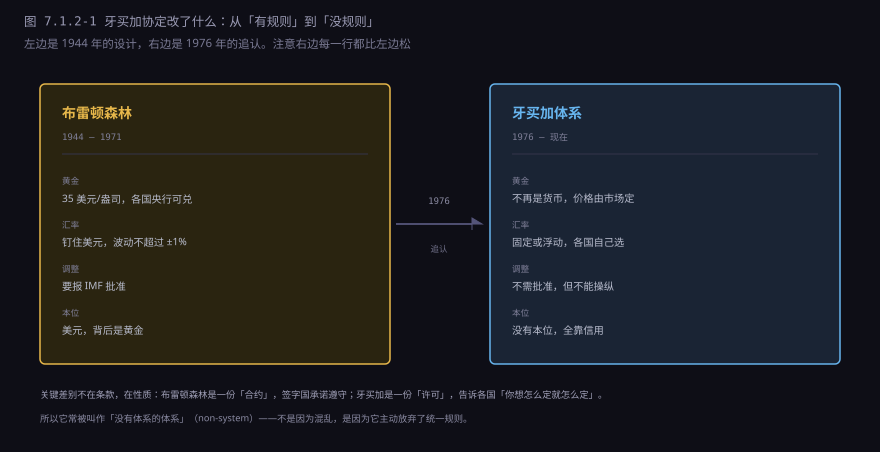
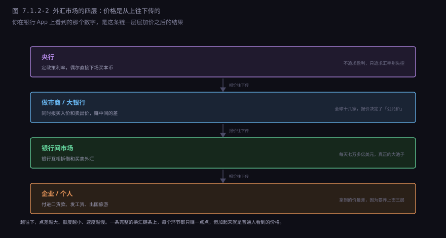
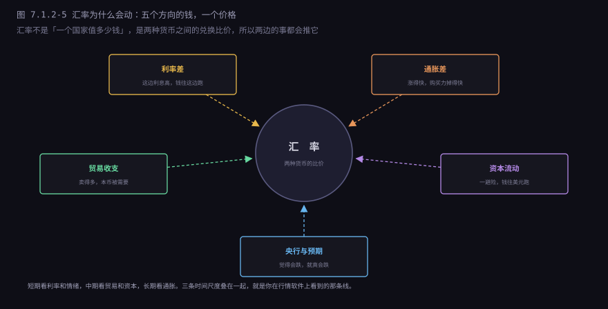
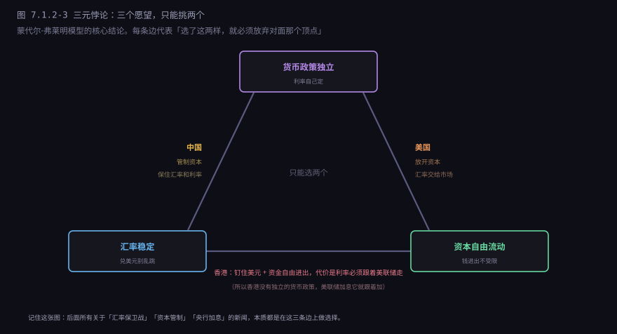
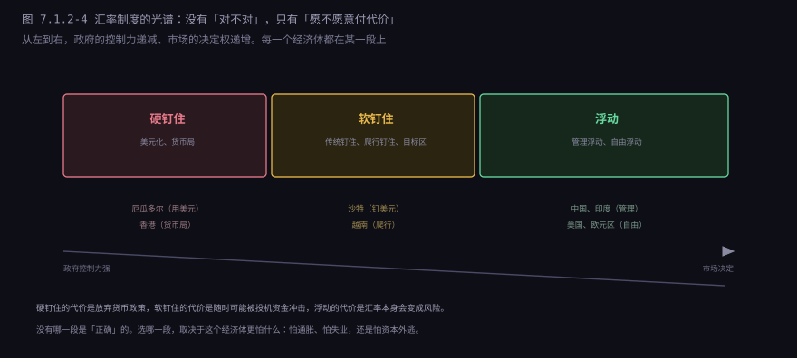
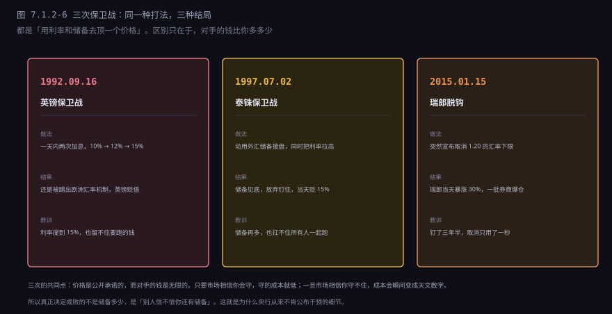

约 0.7 万字 · 6 张图 · 读完你能说清牙买加协定到底改了什么、 汇率这个数字是怎么报出来的、三元悖论为什么绕不过去， 以及三次汇率保卫战为什么会输
牙买加的首都金斯敦，1976 年 1 月 7 日到 8 日，IMF 的临时委员会开了两天会。 会期很短，成果是一份协定，后来被称为《牙买加协定》。
它要解决的问题很具体：IMF 的章程还写着固定汇率，可现实中已经浮动了三年。
1971 年关窗，1971 年底签史密森协定想修回去，1973 年 2 月美元第二次贬值， 3 月主要货币集体浮动。到 1976 年，浮动已经跑了三年，而 IMF 协定条文第四条还写着 「成员国应维持本国货币的平价，波动不超过 1%」。
这就尴尬了：几乎所有成员国都在违反章程，而且没人打算改回去。 唯一的出路是改章程——把已经发生的事写进去，让它合法。
所以《牙买加协定》不是一次设计，是一次事后追认。 这个出身决定了它的性格：它不规定你应该怎么做，只规定你可以怎么做。

具体条款不复杂，四件事：
| 改什么 | 原来 | 牙买加之后 |
|---|---|---|
| 汇率安排 | 必须维持平价，波动 ±1% | 固定或浮动都行，各国自己选 |
| 黄金 | 35 美元官价，美元可兑 | 取消官价，不再是货币定值标准 |
| SDR | 一个补充性的记账单位 | 目标是「主要储备资产」 |
| 对穷国的支持 | 有限 | 卖掉部分黄金，收益设信托基金 |
第一条是核心。「各国自己选」听起来很自由，但它同时意味着没有共同规则—— 你用固定汇率，我用浮动，他用货币局，三种制度之间怎么协调？ 协定的回答是：不协调，各自负责。
第二条是象征性的收尾。黄金从 1971 年就不再兑换了，牙买加只是把这个事实写进章程： 黄金不再是货币的锚，变成一种普通的商品，价格由市场定。 IMF 后来卖掉了大约六分之一的黄金库存，收益拿去补贴低收入国家。
第三条是个没实现的目标。SDR 被定为「主要储备资产」， 意思是要逐步取代美元的地位，让储备货币多元化。 五十年过去，SDR 在全球储备里的占比还是个位数， 这条写在章程里的目标，基本等于没发生过。下一节会讲 SDR 为什么推不动。
第四条是给发展中国家的补偿。浮动汇率对穷国伤害更大—— 它们的出口多是初级产品，价格波动大，汇率再一波动，收入就没法预测。
经济学界给牙买加体系起了个外号：non-system，没有体系的体系。
这个说法不是骂它。它准确地描述了这套安排的性质： 它不是一套规则，是一份「互不干涉协议」。 各国承诺不操纵汇率、不搞竞争性贬值，然后就各管各的。
好处很明显：灵活。一个大国可以选浮动，一个小国可以钉住邻居的货币， 一个想引入外部纪律的国家可以干脆用美元。没有一种制度适合所有国家，那就不强求统一。
坏处也很明显：失衡可以一直拖着。 布雷顿森林时代，逆差国会被 IMF 要求调整；牙买加时代， 逆差国只要能让资本流入补上缺口，就可以一直逆差下去。 美国的贸易逆差从 1970 年代的偶尔逆差，变成 1980 年代之后的长期逆差， 再到 2000 年代占 GDP 百分之四五，没有人能拿章程去纠正它。
这套体系能运转，靠的不是规则，是美国的意愿： 美国愿意让美元流出、愿意承担储备货币的义务、愿意开放自己的市场。 这件事没有写进任何协定，但它是整套体系真正的地基。 一旦美国不愿意了——2018 年之后的贸易战就是信号——体系就会晃。
浮动汇率意味着汇率是一个价格，价格就得有人报。 你在银行 App 上看到的「1 美元 = 7.18 人民币」，不是央行早上开会定的， 是一条链一层层传下来的。

先说规模。全球外汇市场每天的成交量，按国际清算银行的三年一次调查， 2022 年是 7.5 万亿美元。这个数字是什么概念？ 全球一年的商品和服务贸易总额大约 30 万亿美元， 也就是说外汇市场三天的交易量就超过了全年的实体贸易额。
绝大部分交易跟「买东西」没关系。它们是银行之间的头寸调整、 对冲基金的方向性押注、企业的套期保值、以及算法的高频撮合。 真正为「我要付一笔进口货款」而发生的外汇交易，占比不到百分之五。
这就解释了一个反直觉的现象：汇率的短期波动，跟贸易关系不大。 贸易是慢变量，一天之内不会变；而钱是快变量，几秒钟就能跨过大洋。 所以短期汇率主要由资金流决定，而资金流由预期决定。
做市商是这条链的核心。全球大概十几家银行（摩根大通、瑞银、花旗、德意志、 巴克莱这些）做主要货币对的报价，它们同时报两个价： 我买的价格和我卖的价格，中间的差就是它们的利润。
买入价和卖出价之间的差，外汇行业叫「点差」（spread）。 「点」（pip）是报价的最小单位，主要货币对通常是小数点后第四位， 也就是 0.0001。
银行间的欧元兑美元，点差可以小到 1 个点（0.0001）。 你到银行柜台换 1 万美元，点差可能是 20 到 30 个点， 再算上手续费，实际成本可能是 30 到 50 美元。
| 你在哪儿换 | 大概点差 | 换 1 万美元的成本 |
|---|---|---|
| 银行间市场（银行之间） | 1 到 2 个点 | 1 到 2 美元 |
| 银行 App 的结售汇 | 10 到 20 个点 | 10 到 20 美元 |
| 机场兑换点 | 50 到 100 个点 | 50 到 100 美元 |
所以「换汇不收手续费」这句话，技术上是对的，经济上是错的。 费用没消失，它被藏进了价差里。 这也是为什么机场兑换点能活下来——它卖的不是汇率，是「你现在就要」这个便利。
对企业来说，这笔钱是要算的。一家每年进口一亿美元货物的公司， 点差差 10 个点，一年就是 10 万美元。所以大企业会直接跟银行谈 「给我一个接近银行间的价」，这笔业务叫「对客报价」，是银行的一块独立收入。
影响汇率的因素能列几十条，但真正起作用的可以归成五个方向。 关键是它们的作用时间尺度不同。

利率差是最直接的。两个国家的利率差 3 个百分点， 借低息货币、买高息货币，一年能多赚 3%，只要汇率不变就是白赚。 这种操作叫「套息交易」（carry trade），是外汇市场最大的一股力量。 日元长期低利率，所以「借日元买高息货币」是全球最流行的套息交易。
但套息交易有个致命弱点：它赚的是小钱，亏的是大钱。 平时一年赚 3%，一旦汇率反向波动 5%，一年的利润全吐回去。 所以市场一有风吹草动，套息交易会集体平仓—— 大家同时买回日元，日元暴涨。2024 年 8 月就发生过一次， 日元在几天内升值超过 10%，把很多杠杆头寸打爆。
通胀差是长期因素，理论叫「购买力平价」： 两个国家的通胀差多少，汇率长期就应该贬多少。 逻辑很朴素：一个国家物价涨得快，它的货就变贵，出口就少， 本币就该贬值，直到两边物价重新可比。
这个理论在长期（十年以上）大致成立，在短期几乎没用。 《经济学人》的「巨无霸指数」就是拿这个开玩笑：按购买力算， 瑞士的巨无霸贵得离谱，说明瑞郎高估——但瑞郎高估了几十年，也没贬回去。 因为短期决定汇率的是资金流，不是物价。
贸易收支是中期因素。出口多、进口少，外国人需要你的货币来付钱， 需求上去了，本币就升值。但这个过程很慢，而且要经过「钱怎么用」这一环： 顺差国拿到的外汇，如果拿去投资外国资产（买美国国债），资金又流出去了， 汇率反而不涨。这就是为什么中国的贸易顺差很大，人民币却没有大幅升值—— 顺差变成了外汇储备，又流回了美国。下一节讲美元环流会细说。
资本流动和预期是短期的主导。它们经常自我实现： 大家觉得某个货币会跌，就都去卖，它就真的跌了；跌了之后大家更确信， 于是继续卖。索罗斯说的「反身性」就是这个意思。
前面那些因素，最终都要经过一个硬约束。这个约束是整个国际金融里最重要的一个结论， 叫三元悖论（也叫「不可能三角」）。

为什么绕不过去？用一个具体的例子推一遍就明白了。
假设一个国家想钉住美元（汇率稳定），同时放开资本流动。 现在美国加息，利率从 2% 涨到 5%。如果这个国家不跟着加息， 它的利率还是 2%，那会发生什么？
全世界的钱会涌向美国——同样一笔钱，存美国拿 5%，存这里拿 2%， 谁都不傻。钱要流出这个国家，就得把本币换成美元， 本币被抛售，汇率就撑不住了。
要撑住汇率，央行必须买本币、卖美元。但它的外汇储备有限， 买着买着就没了。所以最终只有一条路：跟着加息。 美国加到 5%，它也得加到 5%。这就是「货币政策失去独立」。
反过来，如果它想保持利率自主（不跟着美国加息）， 又要汇率稳定，那就只能关掉资本流动： 不让钱随便进出，套利资金就进不来，利率也就不用跟。 这就是中国的选择。
如果它想利率自主又资本自由， 那就只能让汇率浮动：钱要走就走吧，汇率跌一点， 跌到大家觉得「便宜了、可以买」为止。这就是美国的选择。
把三个典型经济体放在这张图上，各自的处境一下就清楚了。
美国在右边。它不需要管汇率——美元是储备货币， 全世界都要美元，它印出来就有人要。所以它可以让汇率自由浮动， 资本自由进出，货币政策完全自主。美联储加息，全世界跟着难受， 但美国自己不用管别人。这是一种特权，特里芬难题说的就是这种特权的代价。
中国在左边。它要汇率相对稳定（出口企业需要一个可预期的价格）， 要货币政策自主（国内经济有自己的周期），那就必须管住资本流动。 所以我们有外汇管制、有个人每年 5 万美元的购汇额度、 有企业跨境资金流动的审批。这些不是「不开放」，是三元悖论下的必然选择。
香港在底边。它是国际金融中心，资本必须自由进出； 它又钉住美元（7.75 到 7.85 的兑换区间），汇率必须稳定。 两头都要，那就只能放弃货币政策独立——香港的利率完全跟着美联储走。 美联储加息，香港金管局就得跟着加，哪怕香港本地经济正在衰退。
最后这条经常被忽略，但它影响很实在：香港人买房按揭看的是 「最优惠利率」，而这个利率跟美联储的政策利率高度联动。 所以香港的楼市周期，很大程度上是美国的周期。 这就是「放弃货币政策独立」的具体代价。
「固定」和「浮动」不是两个开关，是一条连续的光谱。 IMF 自己就分了十来档，从最硬到最软：

硬钉住有两种极端做法。一种是「美元化」——干脆不用本币， 直接用美元，厄瓜多尔 2000 年就这么干的，津巴布韦也走过类似的路。 另一种是「货币局」——本币背后有 100% 的外汇储备撑着，发多少本币就要有多少美元。 香港从 1983 年 10 月开始就是货币局制度。
货币局的纪律极强，强到没有退路：储备没了，货币就崩。 阿根廷 1991 年搞过 1 比索兑 1 美元的货币局，撑了十年， 2001 年撑不住，放弃的时候社会直接动荡。
软钉住是中间地带，也是出事最多的地方。它有几种玩法： 传统钉住（沙特钉美元）、爬行钉住（越南，允许缓慢贬值）、 目标区（允许在一个区间内波动，原来的欧洲汇率机制就是）。
软钉住的问题在于：它承诺了一个价格，但没有硬约束保证。 市场一旦认为你守不住，就会集中攻击，而你的储备是有限的。 1992 年的英镑、1997 年的泰铢、1994 年的墨西哥比索， 全是在这个位置被打穿的。经济学界有个说法叫「中间空洞」： 要么硬到底，要么彻底放开，中间地带最危险。
浮动也分两种。自由浮动是完全不干预（美国、欧元区、日本）， 管理浮动是偶尔干预（中国、印度、新加坡）。 中国的做法是每天公布一个「中间价」，允许在 ±2% 内波动， 超出就要干预。这个制度叫「有管理的浮动」， 它既不是固定，也不是自由浮动，是三元悖论下的一种折中。
软钉住为什么危险，看三次实战就明白了。三次用的是同一种打法： 用利率和储备去顶一个公开承诺的价格。

1992 年 9 月 16 日，英镑。英国加入了欧洲汇率机制（ERM）， 承诺英镑兑马克在一个窄区间内。但英国经济正在衰退，需要降息； 德国因为统一后的通胀压力，需要高利率。两边利率差越拉越大， 钱从英镑流向马克。
英格兰银行的做法是加息。9 月 16 日上午从 10% 加到 12%， 中午加到 15%——一天之内两次，幅度 5 个百分点。 结果英镑还是跌，当天晚上英国宣布退出 ERM，汇率自由浮动。 加息 5 个点都没留住钱，因为市场知道英国经济撑不住 15% 的利率。 索罗斯的量子基金这一战赚了约 10 亿美元，英格兰银行的损失估计在 34 亿英镑左右。
1997 年 7 月 2 日，泰铢。泰国的做法是用储备接盘： 谁卖泰铢，央行就买。但储备是有限的，投机资金是无限的。 打到 6 月底，泰国的外汇储备已经快见底（表面上还有三百多亿， 但大部分是远期合约的承诺，实际能动用的很少）。 7 月 2 日，泰国宣布放弃钉住，泰铢当天贬值 15%，危机迅速蔓延到整个亚洲。
2015 年 1 月 15 日，瑞郎。瑞士央行在 2011 年 9 月设了一个下限： 欧元兑瑞郎不得低于 1.20，谁卖欧元买瑞郎，央行就接。 这个承诺守了三年半。2015 年 1 月 15 日，央行突然宣布取消下限， 没有任何预告。瑞郎当天对欧元暴涨近 30%， 一批外汇券商爆仓（美国 FXCM 损失 2.25 亿美元，英国 Alpari 直接破产）。
第三次的教训最狠：承诺守得越久，取消的时候越猛。 因为所有人都按「不会变」来定价，一旦变了，所有的头寸同时反向， 流动性瞬间消失。这也是为什么央行最怕的不是攻击，是「预期突然转向」。
三次保卫战都提到「储备」。这个数字经常上新闻—— 中国三万多亿美元，日本一万多亿，某个国家「储备告急」—— 但它到底是干什么用的，很多人有误解。
它不是拿来赚钱的。外汇储备的收益率很低， 大部分买了美国国债，年化 2% 到 3%，还不如拿去投资国内基建。 这笔「少赚的钱」叫机会成本，是持有储备的代价。
它真正的用途是在别人抛售你的货币时，你能接得住。 进口商要付美元，外资要撤走，本国家庭要换汇避险—— 这些需求同时出现时，如果央行没有美元，汇率就会崩， 然后进口商品涨价、外债还不上、通胀失控。
所以储备有一个反直觉的性质：越多越不需要用，越少越容易被攻击。 储备充足的国家，投机资金不敢来（来了也打不穿）； 储备不足的国家，反而会被集中攻击，因为大家都知道你撑不住。 这是一种威慑，跟核武器逻辑一样：最大的价值是「不用」。
中国的外汇储备长期在三万亿以上，其中大部分是美元资产。 这个规模本身就是三元悖论的一部分：要管住资本流动，又要维持汇率稳定， 就必须有足够厚的缓冲垫。储备就是那个垫子。
牙买加体系运行了五十年，比布雷顿森林长得多。但它不是万能的：
| 它做不到 | 原因 | 现实表现 |
|---|---|---|
| 让三个目标同时成立 | 三元悖论的硬约束 | 每个国家都得放弃一个，只是放弃哪个不同 |
| 自动纠正贸易失衡 | 没有强制调整机制 | 美国逆差几十年，靠资本流入填 |
| 阻止汇率被武器化 | 没有裁判，只有「避免操纵」这句软话 | 制裁、汇率操纵指控、竞争性贬值 |
| 保护普通人 | 汇率波动的成本由进口者和债务人承担 | 本币贬值，进口商品涨价，外债负担加重 |
最后一条值得多说一句。汇率听起来是个宏观数字，但它的成本是具体的： 本币贬值 10%，进口的药品、粮食、石油就贵 10%， 有外债的企业要多还 10% 的钱。而这些成本不会平均分摊—— 有钱人可以换美元避险，普通人只能承受涨价。
到这里，「规则是谁定的」这个问题可以回答了：没有谁定，是剩下的。 1971 年关窗，1973 年浮动，1976 年追认，之后每一次危机都打一个补丁。 今天这套体系是五十年补丁的总和，不是任何人的设计。
下一节讲一个更具体的问题：美元没有黄金撑着， 凭什么还是全世界的储备货币？「石油美元」是怎么回事？ 以及那个被说得很玄的「美元环流」——它其实是这套补丁体系里最核心的一个循环。